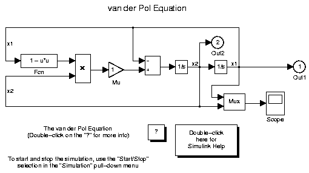

Table of Contents
List of Tables
Table of Contents
This is a demonstration of the Report Generator's ability to experiment with Simulink systems and auto-document the results. In this report, we will load the model vdp and simulate it 5 times. The report will modify the vdp/Mu block's "Gain" value, setting it to the values [-1 0 0.5 1 2 ] . Each iteration of the test will include a set of scope snapshots in the report.
Success. The conditioned signal has a maximum value of 2.2011, which lies in the desired range of greater than 2.1 and less than 3.
Success. The conditioned signal has a maximum value of 2.6774, which lies in the desired range of greater than 2.1 and less than 3.